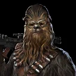
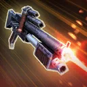
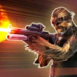

Vandor Chewbacca
Aggressive Scoundrel Tank that provides Protection Recovery for his allies when they are attacked

Aggressive Scoundrel Tank that provides Protection Recovery for his allies when they are attacked

Deal Physical damage to target enemy. If it's Chewbacca's turn, he also gains Advantage for 2 turns. This attack ignores Defense.

Deal Physical damage, based on Chewbacca's Max Health instead of his Attack Damage, to target enemy twice. Target other ally recovers Health equal to 50% of the damage dealt. Then, Chewbacca and target other ally gain Protection Up (30%) for 2 turns.
Prepared: If Chewbacca is Prepared, he deals double damage for this attack, recovers Health equal to 50% of the damage dealt, reduces this ability's cooldown by 2, and grants all Prepared allies Protection Up (30%) for 2 turns. Then, Chewbacca is no longer Prepared.
Chewbacca has 40% less Max Protection, but 80% more Max Health. In addition, all enemies deal -25% damage while Chewbacca is buffed.
While Chewbacca is buffed, he has 100% Counter Chance. At the end of each turn while Chewbacca is buffed, if any ally took damage from an attack and Chewbacca did not, he recovers Protection equal to 10% of his Max Health and other Scoundrel allies recover half of that amount. When Chewbacca recovers to Max Protection this way, he becomes Prepared. When another light side Scoundrel ally is defeated, Revive that ally at 60% Health, if Chewbacca is Prepared. Then, Chewbacca is no longer Prepared.